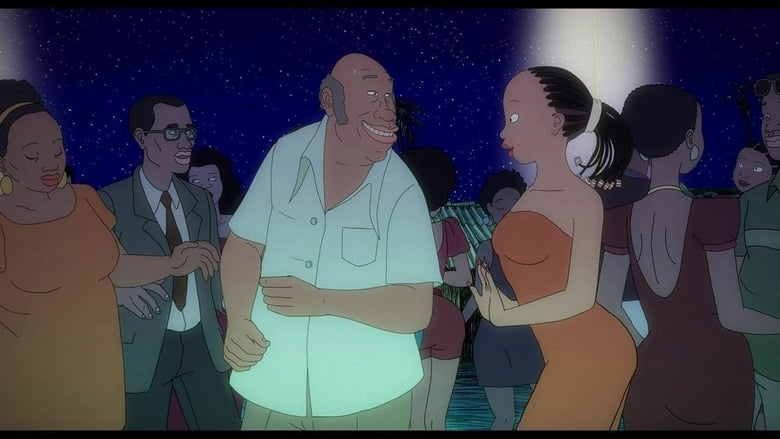

If you consider yourself a fan of animation at all (and not just whatever Disney or Cartoon Network release, or whatever anime Japan has produced), then you must already be familiar with GKIDS. In North America, they are alone in distributing animated films from around the world, usually independent films that no other company would bother with. They even have the connections to get award nominations for these films in good measure. By 2020, their importance has diminished a little; after a few successful anime licenses, they simply can't avoid the profit potential from that dedicated audience... but that's a unrelated story.The reason I bring up GKIDS is this: they release a fair number of movies, and inevitably, a few of them get virtually no marketing. If I didn't regularly look up their website for a film catelog, I wouldn't even know the film "Aya of Yop City" even existed, let alone that GKIDS had it. The film came out in 2013, but wasn't released on home video in America until 2019. Aside from a hard-to-find press release, GKIDS made little mention of it on any social media pages. Looking closely at the packaging, it's clear that neither Universal or Shout Factory, the usual partners for GKIDS and physical media, were interested in the film (lesser known Kino Lorber was the partner this time, but GKIDS might as well have paid to independently release it themselves). These are all bad signs."Aya of Yop City" isn't an easy sell for the mass public either, from the title, to the poster art, to the premise. Set in Yopougon-Koute in Africa, a small town with sandy streets and clay houses, the people do their best to live a modern lifestyle. They refer to it as "Yop City" to sound like hip cities in America. They watch television and appreciate the advertisements for products they can buy, and pay attention to the latest fashions from Paris. The local girls have a reputation for their beauty. And the girls take advantage of it, spending time at the outdoor night clubs, accepting a free drink or two, or perhaps a meal, from suitors looking to flirt. Aya, a young woman, is the only one that seems to be sensible. Well-educated and independent, she has dreams of becoming a doctor, and looks poorly on the lifestyle of her club-dancing friends and beer-drinking neighbors. Most of the town doesn't have an education, either due to cost, or simply a lack of ambition, and few teenagers ever bother to get jobs to pay for themsevles. Aya's girlfriends are happy taking advantage of men, until they start to get taken advantage of: one gets pregnant from a one-night stand by the good-for-nothing son of a CEO of a beer company. At least, she 'thinks' it's his son... Things go on from there, with a couple plot threads involving different characters, each of whom confide in Aya, either for help or to simply talk in the backyard.Being set in Africa (despite being produced and released in France), my ignorance makes "Aya of Yop City" difficult to review. For example, the film is set in the 1970's, but it makes no mention of this: the black-and-whtie tube tv's and lack of smartphones could very well be normal in other parts of the world, and I initially assumed it to take place in present day. I have mixed feelings about seeing a relatively modern town where education isn't a priority, and where women are expected to lead simple lives and marry rich and "multiply" to take care of themselves. In their romantic lives, even the 'smart' characters are easily fooled, and virtually every man in the movie is portrayed as "handsome, but worthless" or "dumb and lazy." Except for the adult men, of course, who only worry about their jobs and don't hesitate to beat their children. I can't really review or critique what's on display without having been there myself. It's easy to groan at the casual sexual harassment and idiots who don't see the consequences of an open sex-life until it's too late. It's easy to laugh at the free-spirited townsfolk who get drunk and dance like no one is watching, or at how poorly educated and vain they can be. But what parts are supposed to be funny, and which are supposed to be satire on real life? On the otherhand, I appreciated the chance to witness what life in Africa can be like (despite this being fictional, and despite being set decades ago, and therefore irrelevant to the culture today). And most of what I described can easily be projected to every other part of the world, including America.Regardless of the setting, I don't particularly care about romances with different men each night: in my view, all the characters here are idiots. The story threads ultimately don't come together as a whole to give any real sturcture to the movie, leaving one unsatisfied. Even Aya's direct family doesn't escape the effects of sex and mistresses, but upon looking at both legitimate and illegitimate children play together, she smiles, accepting the situation. It's a moral I remain mixed with: sure, saying 'life will go on and everything will be fine' is nice, but I'm not certain that characters have properly learned anything, and the same characters are shown leaving with yet more strangers in the final scene. Both the story and the artstyle suggest the movie was based on an indepedent graphic novel, which turned out to be exactly true. The original author and artist, Marguerite Abouet and Clement Oubrerie, were in charge of directing this movie, likely as a love letter to their creation rather than an opportunity for a mass success. The art style turns out to be the most interesting thing of "Aya of Yop City," a cross between "Chico and Rita" and "The Rabbi's Cat" (the later of which was made by the same animation studio). Excessive outlines in backgrounds give a lot of detail, and a lot of cross-hatching (even of 3D models like cars) gives things depth and shadow, making any given shot appear as though it came directly from a comic. Character designs range from appearing normal, to having exggerated features like big mouths or long necks, in ways that I wasn't convinced with. Animation varies too, occasionally looking fluid with movement, but often being janky. I don't have any particular comments on the French dub or music, which is disappointing, since the music should have made a much bigger impact, especially since so much of the film takes place at night clubs.One final curiosity was why the film was an animated one to begin with: "Aya of Yop City" could have easily been live-action, and that might have even fit better for the subject matter. Likely, animation was just the best way to reproduce the graphic novel, and by chance, would allow the film to (eventually) be seen by viewers outside of the home country, by people like me who will blindly give any animated film a chance.
- "Ani" More reviews can be found at : https://2danicritic.github.io/ Previous review: review_Aura_-_Koga_Maryuin's_Last_War Next review: review_Ayakashi_-_Samurai_Horror_Tales_-_Goblin_Cat